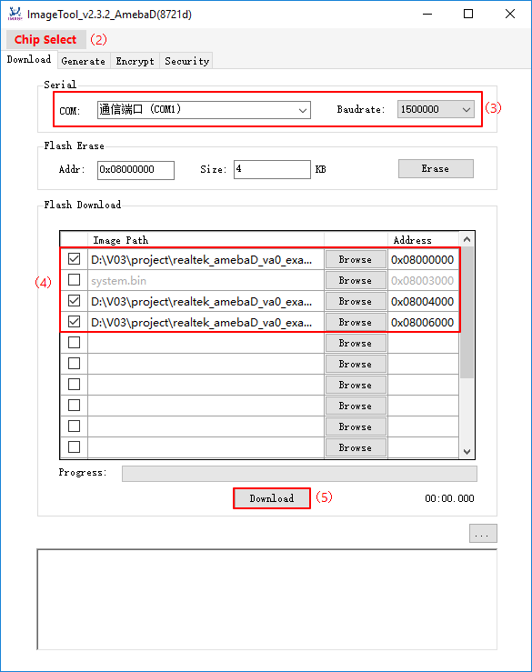

快速入門¶
GCC 開發環境的設置
您可以在 Windows 系統中使用 Cygwin 作為 GCC 開發環境。 Cygwin 是 GNU 和開源工具的集合，它們提供的功能類似於運行在 Windows 系統上的 Linux 發行版。
點擊 http://cygwin.com/下載 使用在 Windows 平台上的 Cygwin 安裝包 setup-x86.exe。 1. 32 位的 Cygwin 可以同時支持 32 位 和 64 位 的Windows操作系統。 2. Cygwin 安裝過程中需要選擇 ‘Devel -> make’ 和 ‘Math -> bc’ 實用程序。
選擇 Packages 頁面，如下圖所示。


For Linux, refer to AN0400 Ameba-D Application Note v12.pdf to build the GCC development environment.
Knowledge about Ameba-D Demo Board
For Ameba-D, there are many types of chipsets available, such as RTL8720CS, RTL8721CSM, RTL8722CSM, RTL8720DN, RTL8720DM, RTL8721DM, and RTL8722DM. In addition, the chipsets can be embedded on Ameba-D DEV demo board, which is extended to various I/O interfaces. The corresponding HDK (Hardware Development Kit) documents are available, please contact RTK for further details. The hardware block diagram of Ameba-D demo board is shown below. USB TO UART: power supply and log print. The baud rate is 115200bps SWD: SWD interface, used to download images and debug with IAR. Reset button: reset Ameba-D to run firmware after IAR completes download.

Connection to Log Console
On Ameba-D board, FTDI Chip and FT232 can be used for the log console and debugger. To view the log console, make use of the terminal tool , such as SecureCRT/teraterm/putty and etc. We will take our internal tool as an example. 1) Select the corresponding serial uart configure communicate parameter and then open it. 2) Press the Reset button on Ameba-D board. Some messages can be found in the terminal.

Building the First GCC Project on Ameba-D
The following steps are for first-time developer to build GCC project, under existing RTK SDK. Building Code This section illustrates how to build SDK. First, you need to switch to GCC project directory. For Windows, open Cygwin terminal and use $ cd command to change directory to KM0 or KM4 project directory of Ameba-D SDK. Note: You need to replace the {path} to your own SDK location, and add “cygdrive” prefix in front of the SDK location, so that Cygwin can access your file system.
$ cd /cygdrive/{path}/project/realtek_amebaD_va0_example/GCC-RELEASE/project_lp
$ cd /cygdrive/{path}/project/realtek_amebaD_va0_example/GCC-RELEASE/project_hpFor Linux, open its own terminal and use $ cd command to change directory to KM0 or KM4 project directory of Ameba-D SDK.
$ cd /{path}/project/realtek_amebaD_va0_example/GCC-RELEASE/project_lp
$ cd /{path}/project/realtek_amebaD_va0_example/GCC-RELEASE/project_hpTo build SDK for normal image, simply use $ make all command under the corresponding project directories on Cygwin (Windows) or terminal (Linux). KM0 project For KM0 project, if the terminal contains “km0_image2_all.bin” and “Image manipulating end” output message, it means that the image has been built successfully, as below shows.

If somehow it is built failed, type $ make clean to clean and then redo the make procedure. After successfully built, the image file is located in project/realtek_amebaD_va0_example/GCC-RELEASE/project_lp/asdk/image, as below shows.

KM4 project For KM4 project, if the terminal contains “km4_image2_all.bin” and “Image manipulating end” output message, it means that the image has been built successfully, as below shows.

If somehow it built failed, type $ make clean to clean and then redo the make procedure. After built successfully, the image file is located in project/realtek_amebaD_va0_example/GCC-RELEASE/project_hp/asdk/image, as below shows.

Downloading Images to Ameba-D Realtek provides an image tool to download images on windows.
Environment Requirements: EX. WinXP, Win 7 Above, Microsoft .NET Framework 3.5
ImageTool.exe Location: SDKtoolsAmebaDImage_ToolImageTool.exe

Assuming that the ImageTool on PC is a server, it sends images files to Ameba (client) through UART. To download image from server to client, the client must enter uart download first. 1) Enter into UART_DOWNLOAD mode.
Push the UART DOWNLOAD button and keep it pressed.
Re-power on the board or press the Reset button.
Release the UART DOWNLOAD button.Now, Ameba board gets into UART_DOWNLOAD mode and is ready to receive data. 2) Click Chip Select (in red) on UI and select chip (AmebaD or AmebaZ). 3) Select the corresponding serial port and transmission baud rate. The default baud rate is 1.5Mbps (recommended). 4) Click the Browse button to select the images (km0_boot_all.bin/km4_boot_all.bin/km0_km4_image2.bin) to be programmed and input addresses.
The image path is located in {path}projectrealtek_amebaD_va0_exampleGCC-RELEASEproject_hpasdkimage and {path}projectrealtek_amebaD_va0_exampleGCC-RELEASEproject_hpasdkimage, where {path} is the location of the project on your own computer.
The default target address is the SDK default image address, you can use it directly.5) Click Download button to start. The progress bar will show the transmit progress of each image. You can also get the message of operation successfully or errors from the log window.
{kind=link}